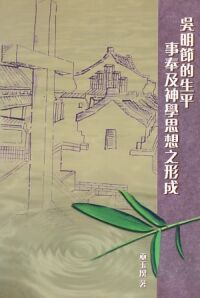

巫玉揆牧師–基督教香港信義會靈安堂堂主任
傳載自信義宗神學院第104期通訊
引言
吳明節牧師是香港華人教會傑出領袖之一，也是基督教香港信義會的始創人之一，助人從不遺餘力，處事總是埋頭苦幹，故贏得「良牧」、「忠僕」、「君子」等讚語。

吳牧師也是一位神學教育工作者，他擔任信義神學院(包括信義聖經學院及信義宗神學院)教席歷時廿六載。與此同時，他也是一位作家，課餘時間，曾於信義刊物、基督教週報及今日華人教會寫作散文最少二百七十九篇，並有二十六本大小著作，筆者為悼念恩師轉眼間己主懷安息十七年，特選文〈吳明節牧師對中國文化的貢獻〉以表揚他在這方面的貢獻。此外，筆者也鼓勵讀者對「吳明文化交流基金」作出一點奉獻，以支持本土神學教育的發展。
一、神學本色化的貢獻
文化一詞，博大高深，含義廣泛，要論述它殊不簡單。然而，本文又要將神學與中國文化牽連掛，並導出吳氏在這方面的貢獻，又是怎麼說的呢？據筆者所知，社會學家對「文化」一詞的定義總有數百個之多，令人眼花撩亂，不易界說。不過，我認為文化有其精神的部份，包括科學、宗教、藝術、文史、哲學、倫理道德等方面，這是屬於無形的部份;但它亦有物質的內容，包括時裝、工具、器皿、飲食、建築等部份，由此可見，吃喝玩樂都是文化的表現也。
吳氏對本色神學的貢獻，可說在於宗教思想的理念部份，特別是對神學要本色化的問題。眾所周知，神學多是舶來的，迄今為止，鮮有本土華人神學家可以自成一個系列，但倡而導之，發表一些本色神學專題論述者，或是身體力行，盡力落實本色神學的範疇者，當然是大有人在，而吳氏也可以說是其中一人也。
筆者的著作《吳明節的生平、事奉及神學思想之形成》曾經論述吳氏對本色神學的一些見解，包括了他對(1)本色神學的界定;(2)本色神學的危險;(3)本色神學的根據;(4)本色神學的立場;(5)本色神學的使命。而在其中一節，吳氏也論到基督教與中國文化接觸後所生的流弊、差異和路向，可以說得上甚為重要，尤其是他所說本色神學的路向這一方面。吳氏在他所著《信徒與神學》第五冊論到「教會本色化」時提出，教會不僅要注意自理、自養、自傳的問題，同時也要注意到儀文、表徵和思想問題。此外，更加上語文的應用這一個方向。總結而言，他認為(1)權責的本色化;(2)表徵的本色化;(3)思想的本色化;(4)語文應用的本色化，也就是基督教與中國文化接觸時所產生的必然路向。
吳氏又認為「一個中國本色化的神學家，除了要精通歷代各門各派的思想與架構以外，還要對博大精深的中國文化，以及」
二、建築本土化的貢獻
吳氏對中國文化的第二項貢獻，就是他建築信義會元朗生命堂之時，採用了富有中國藝術
特色的建築，也是他建構本色神學時所強調的文化表徵部份。吳氏透過這項教堂的建築，可算是具體而細微地將中國文化的建築藝術，美輪美奐地呈現出來，通常我們會說這就是中國文代的物質表現部份了。
元朗生命堂，是一座中西合璧的巍峨聖殿，外表採用中國式宮殿建築，內部的門窗等則採西式設計。該聖殿的主禮堂，面積為七十三呎乘四十四呎，可容四百五十二個座位;另有閣樓，可容納兩百人，在五十年代之新界元朗而言，該建築規模之大，經費之鉅，設計之精心，建築之堂皇，可謂無出其右。
目前，這座教堂仍然座落在元朗社區的心臟地帶，四週店舖林立，交通方便，居民不停地穿梭往來，由晨早到夜晚，都是這般熱鬧。今日，我們若抽空往元朗市中心一遊，必然會看見這座古色古香，充滿了本土建築藝術的教堂，飄然屹立在新時代的建築群中，猶如一朵盛開的金蓮，散發著薰芳濃郁之香氣，使人頓發思古之幽情，忍不住都要停留片刻去觀賞和品評一番，甚至發出不少讚美的聲音來。所以，筆者撰寫此文之時，不能不涉及到吳氏在這一方面的貢獻。
最後不能漏掉一筆的，就是前香港信義會鑽石堂的舊址，原本也是採用中國特色的建築，同時也是吳氏主政香港信義會之時所築成的教堂，可惜因為政府開闢大老山隧道時被逼遷拆，這樣富有中國文化特色的建築物，頓時付之流水，殊為可惜！在今日香港人的集體回憶逐漸加強之時，以及秉持執著持續發展的理念之下，這一件事是不大可能發生的。
三、語文本土化的貢獻
吳氏談及本色神學的路向時，他十分強調語文應用的本色化，主要有如下三方面:即
1)寫的讀的，講的聽的，必須都能明白;(2)尋求具有永久性的詞彙或詞句，以作恰當的應用;(3)創造使用並吸收中國化的詞句;使用優美的時體詞句。
綜觀吳氏的生平事奉，他甚為喜愛文字寫作，無論是專題、文集、詩集、散文、講稿、書信、傳記、遊記等，吳氏都喜好透過不同渠道發表。據筆者統計，單就信義會刊物所發表的文章就達到214篇，其中詩詞歌賦共有52篇;文學小品文共有26篇(望海樓隨筆佔23篇)，雖算不上汗牛充棟，但為數亦甚可觀，尤其是他把中國文化的詩詞歌賦融入於自己的信仰之中，當然是最為發人深省，使到不少信徒獲益良多，而靈命也同時得到造就。
不過，吳氏在語文應用方面使筆者最為印象深刻的，卻是創作了兩首本土聖歌詞，第一首是吳氏於一九五二年寫了〈大哉，天父獨生愛子〉(頌主新版368首)的歌詞，更配合以中國民歌曲調，特別突顯了中國文化的信仰氣色。此外，在六、七十年之時，香港信義會的青年工作特別興盛，青年人事主的熱情可愛，溢於言表，尤其是青年們齊集在一起，大家一同唱出吳氏創作〈青年團契聯會會歌〉，更是感到熱情澎湃，猶如海浪般滔滔滾來;歌聲的美妙和雄壯，頓感繞樑三日，歷久不散，突然使到我們這群青青不期然地快快奮興起來，並且就如歌詞所描寫一般，「信義會青年，快奮興背十架……流淚把血洒」。筆者現今娓娓道來，似乎仍懷著往惜的熱血情懷呢！
結論
吳明節牧師在神學院任教時，不單教授中國文化及哲學等科目。與此同時，更不時將其深厚的國學知識傳遞給學生，並教導他們怎樣寫作詩詞歌賦，甚至書寫書法等。至於他講道時，更不時引用成語典故、講述風土人情等故事，除了引人入勝，更可增加宣教的效果。然而更形重要的，就是吳氏落實了他所倡導本色神學的路向，特別實行了(1)思想的本色化;(2)表徵的本色化;(3)語文應用的本色化，並將中國文化的精神部份和物質內容部份都完全涵蓋著了。至於權責本色化這一方面，自從吳氏擔任香港信義會監督以來，就無時無刻不是致力香港信義會的權責本色化，結果香港信義會在八十年代之前，就已經完成「自立、自養、自傳」。可見吳氏事奉上帝，治理教會，服侍人群，終其一生，都是與中國文化結下了不解之緣，而他對中國文化的貢獻自然是不言而喻的了。

吳明節的生平事奉及神學思想的形成


http://www.life.org.hk/acms/content.asp?site=llcyl&op=showbyid&id=27949